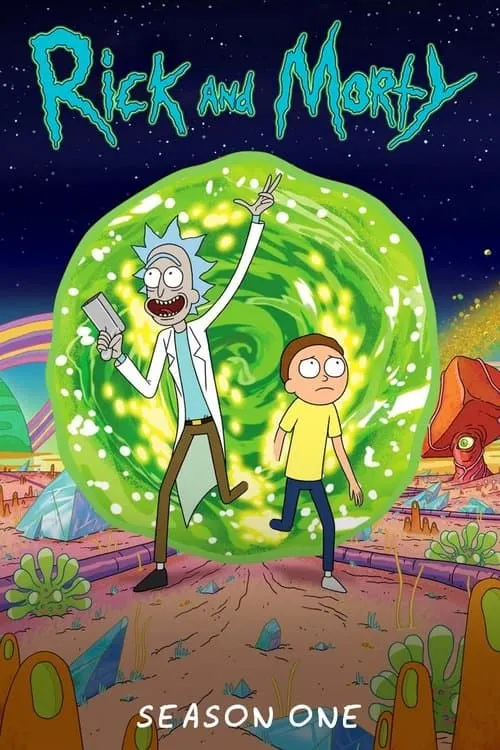
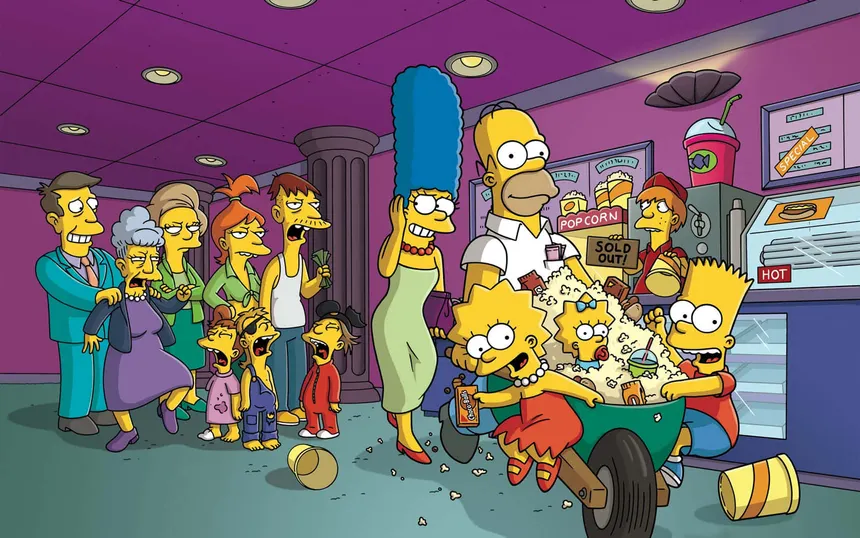

Una serie animada para adultos que mezcla ciencia ficción, humor negro y crítica social. Narra las aventuras interdimensionales de Rick Sánchez, un científico genio y alcohólico, y su nieto Morty, un adolescente inseguro. A través de viajes por universos paralelos, la serie explora temas como la existencia, la moral y la locura, con un estilo irreverente y filosófico.

Temporada 1 de Rick y Morty
Aqui os dejo el trailer de la primera temporada: Trailer
Capitulos temporada 1:
Piloto
El perro cortacésped
Parque anatómico
¡Aliens del Sr. Noches Shyamalan!
Destruir a los Meeseeks
Poción de amor n.º 9
Criando a Gazorpazorp
Canales interdimensionales
Algo muy Ricked este camino viene
Encuentros cercanos de tipo Rick
Negocios Ricksy
Los Simpson
Una de las series animadas más famosas del mundo. Sigue la vida cotidiana de la familia Simpson —Homer, Marge, Bart, Lisa y Maggie— en la ciudad ficticia de Springfield. Con humor satírico, refleja y critica la sociedad estadounidense, abordando temas como la política, la cultura popular y la familia moderna. Es una mezcla de comedia y comentario social que ha influido en la televisión durante décadas.

Personajes importantes:
Homer Simpson
Marge Simpson
Bart Simpson
Lisa Simpson
Maggie Simpson
Ned Flanders
Krusty el Payaso
Mejores momentos:
Gravity Falls
Una serie animada de misterio y aventuras creada por Alex Hirsch. Cuenta la historia de los hermanos Dipper y Mabel Pines, quienes pasan el verano con su tío abuelo Stan en el misterioso pueblo de Gravity Falls. Allí descubren criaturas sobrenaturales, códigos secretos y conspiraciones. Combina humor, emoción y elementos de misterio, con un estilo visual colorido y una trama llena de pistas ocultas y enigmas.